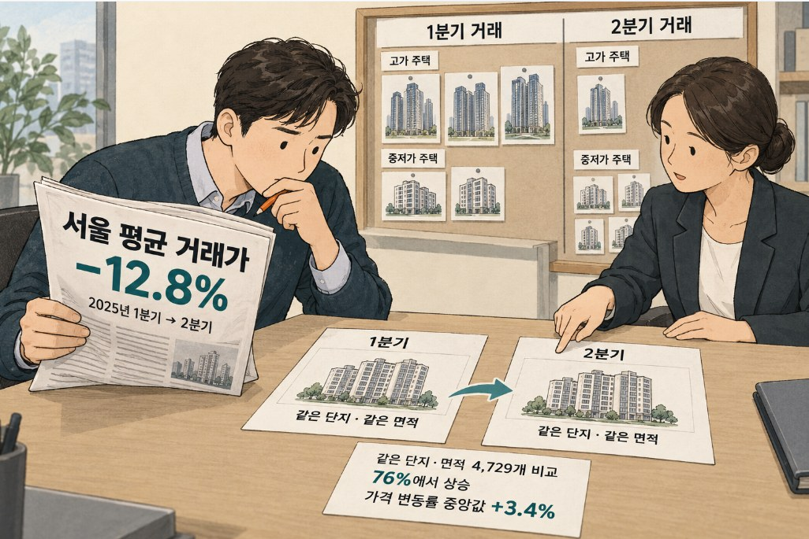
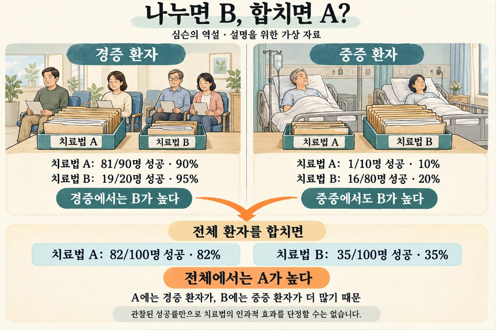
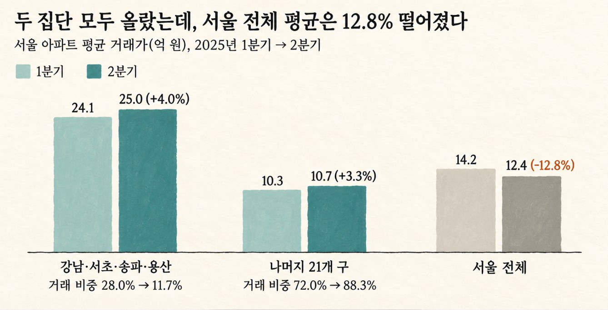
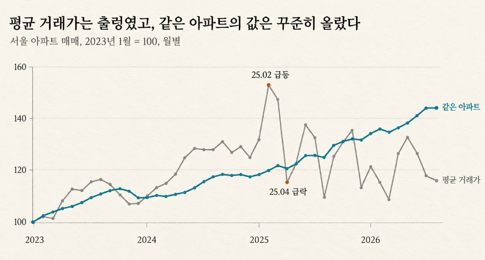

[그 숫자, 누가 셌어요? 4] 집값은 올랐는데 평균은 떨어졌다
같은 아파트는 올랐는데 서울 평균 거래가는 12.8% 떨어졌습니다. 거래 구성이 바뀌면 생기는 심슨의 역설입니다.
그 숫자, 누가 셌어요? · 8편 중 5번째 글
연재 목차 보기
대표가 준비 중인 책 『그 숫자, 누가 셌어요?』의 원고를 연재합니다. 숫자는 모두 한국의 공개 자료를 내려받아 대표가 직접 다시 계산했습니다. 자료는 저장소에서 받을 수 있습니다.
내가 사는 단지의 시세는 그대로인데, 뉴스에서는 서울 아파트 평균 거래가가 크게 떨어졌다고 합니다. 반대로 동네 부동산에서는 요즘 많이 올랐다고 하는데 통계는 하락을 가리키는 때도 있습니다. 두 말이 모두 틀리지 않았다면, 같은 시기 같은 도시의 집값을 두고 왜 이렇게 다른 이야기가 나올까요? 평균 거래가는 무엇을 더해서 나눈 숫자일까요?
한 달 새 3억 원이 빠진 평균
2025년 봄, 집을 살지 말지 고민하던 사람이라면 이런 숫자를 보고 숨을 골랐을 겁니다.
서울 아파트가 3월에는 평균 14억 2,700만 원에 거래됐습니다. 4월에는 11억 1,400만 원이었습니다. 한 달 사이에 평균이 3억 1,000만 원 넘게, 22% 떨어진 겁니다. 국토교통부 실거래가 자료를 그대로 더해서 나눈 숫자입니다.
분기로 묶어도 비슷합니다. 2025년 1분기 평균 14억 1,900만 원, 2분기 12억 3,700만 원. 12.8%가 빠졌습니다.
"드디어 꺾였다." 그렇게 생각하고 조금 더 기다려 보기로 한 사람도 있었을 겁니다.
평균이 떨어지면 집값이 떨어진 것이다?
우리는 평균 거래가격을 '집값'이라는 뜻으로 읽습니다. 평균이 오르면 집값이 오른 것이고, 평균이 떨어지면 집값이 떨어진 것이라고요.
그런데 실거래가 평균에는 항상 빠지는 정보가 하나 있습니다. 이번 달에 팔린 집과 지난달에 팔린 집은 같은 집이 아닙니다. 3월에는 대치동 아파트가 많이 팔렸고, 4월에는 노원구 아파트가 많이 팔렸다면 어떻게 될까요?
집값이 떨어졌는지 알고 싶다면, 같은 집이 얼마에 팔렸는지를 봐야 합니다.
같은 아파트는 올랐다
그래서 같은 아파트끼리 비교했습니다. 2025년 1분기에도 거래가 있고 2분기에도 거래가 있는 단지·면적을 찾으니 4,729개였습니다. 같은 단지, 같은 면적의 집이 두 분기에 각각 얼마에 팔렸는지 나란히 놓은 것입니다.
결과는 반대였습니다. 4,729개 가운데 76%에서 가격이 올랐습니다. 중앙값으로 3.4% 올랐습니다.
구별로 봐도 마찬가지입니다. 서울 25개 구 가운데 20개 구에서 2분기 평균 거래가가 1분기보다 높았습니다.
같은 아파트는 올랐고, 대부분의 구에서도 올랐습니다. 그런데 서울 전체 평균은 12.8% 떨어졌습니다. 부분은 대부분 올랐는데 전체는 떨어진 것입니다.
무엇이 팔렸는지가 바뀌었다
바뀐 것은 거래된 집의 구성이었습니다.
2025년 2월 13일 서울시는 잠실·삼성·대치·청담동의 토지거래허가구역을 풀었고, 한 달여 뒤인 3월 24일부터는 강남·서초·송파·용산구 아파트 전체를 다시 허가구역으로 묶었습니다. 허가구역에서는 집을 사려면 구청 허가를 받아야 하고 직접 들어가 살아야 합니다. 풀렸을 때 몰렸던 거래가 다시 묶이자 크게 줄었습니다.

이 네 구는 서울에서 집값이 가장 비싼 곳들입니다. 1분기 이 네 구의 평균 거래가는 24억 700만 원, 나머지 21개 구는 10억 3,500만 원이었습니다. 그런데 서울 전체 거래에서 이 네 구가 차지하는 비중이 1분기 28.0%에서 2분기 11.7%로 떨어졌습니다.
비싼 집의 거래가 줄고 상대적으로 싼 집의 거래가 늘었으니, 다 더해서 나눈 평균은 내려갈 수밖에 없습니다. 각각의 집값이 조금씩 올랐더라도요.
학교 성적으로 비유하면 이렇습니다. 1반은 평균 90점, 2반은 평균 60점입니다. 다음 시험에서 두 반 모두 5점씩 올랐는데, 1반 학생 절반이 시험을 안 봤다면 학년 평균은 떨어질 수 있습니다. 점수가 내려간 사람은 한 명도 없는데도요.
알아두면 좋은 통계 · 심슨의 역설
'심슨의 역설(Simpson's Paradox)'은 데이터를 세부 그룹(집단)으로 나누어 볼 때의 결과와, 이 집단들을 하나로 합쳐서 전체로 볼 때의 결과가 서로 정반대로 나타나는 통계적 현상을 말합니다. 1951년 이 현상을 학문적으로 명확하게 정리한 영국의 통계학자 에드워드 심슨의 이름에서 유래했습니다.

이해를 돕기 위해 흔히 드는 고전적인 예시가 있습니다. 어떤 병원에서 두 가지 치료법(A와 B)의 성공률을 조사했다고 해봅시다.
1. 전체 환자를 한데 모아 합쳐서 볼 때:
- 치료법 A를 쓴 환자들 전체의 성공률이 치료법 B보다 더 높아 보입니다. 그래서 "치료법 A가 더 우수하다"는 결론을 내리기 쉽습니다.
2. 환자의 상태(증상의 경중)별로 집단을 나누어 볼 때:
- 환자의 상태가 '중증'인 그룹과 '경증'인 그룹으로 나누어 각각 치료법 A와 B의 성공률을 비교해 봅니다. 중증 환자 그룹에서도 치료법 B의 성공률이 더 높고, 경증 환자 그룹에서도 치료법 B의 성공률이 더 높습니다.
- 즉, 어느 그룹을 보나 치료법 B가 더 우수한데, 전체를 합쳐 놓으니 오히려 치료법 A가 더 좋아 보이는 역설이 벌어진 것입니다.
이런 현상이 일어나는 이유는 집단별로 '표본의 크기(가중치)'가 크게 다르기 때문입니다. 앞서 본 아파트 집값 예시에서도 마찬가지입니다. 강남 등 비싼 구(A 집단)와 나머지 구(B 집단)라는 세부 그룹에서는 각각 집값이 올랐지만, 거래량이 적어졌다는 이유로 '전체 평균'을 냈을 때는 마치 집값이 폭락한 것처럼 전체 방향이 뒤집혀 나타났습니다.
따라서 통계 데이터를 해석할 때는 단순히 전체를 뭉뚱그린 결과만 믿을 것이 아니라, "데이터의 구성 비율이나 그룹별 가중치가 숨겨져 변하고 있지는 않은지" 반드시 쪼개어 살펴보아야 합니다. (그림 4-3).

역설처럼 보이지만 원리는 3장에서 다룬 가중평균과 정확히 같습니다. 전체 평균은 각 집단별 평균에 '거래 비중'을 가중치로 곱해서 더한 값이기 때문입니다.
전체 평균 = (강남 4구 비중 × 강남 4구 평균) + (나머지 비중 × 나머지 평균)
그러므로 전체 평균은 두 가지 이유로 움직입니다. 첫째는 집단별 평균 자체가 바뀌는 경우, 둘째는 가중치(거래 구성 비율)가 바뀌는 경우입니다. 2025년 2분기에는 두 집단 모두 평균 집값이 4.0%와 3.3%씩 올랐음에도 불구하고, 비싼 집단의 가중치(거래 비중)가 28.0%에서 11.7%로 급격히 쪼그라들면서 결국 전체 평균을 아래로 끌어내려 버린 것입니다.
심슨의 역설을 피하는 방법은 크게 두 가지입니다. 데이터를 세부 집단으로 나누어서 보거나, 구성을 일정하게 고정하여 '같은 것끼리' 비교하는 것입니다.
같은 아파트끼리 지수를 만들어 봤다
특정 분기 하나만의 착시가 아닌지 검증하기 위해, 2019년부터의 서울 아파트 거래 전체 데이터를 바탕으로 직접 '같은 아파트 지수'를 만들어 보았습니다.
단지명, 번지, 전용면적이 모두 일치하면 같은 집으로 간주하고, 동일한 집이 시간이 지나 다른 달에 다시 거래되었을 때 가격이 얼마나 변했는지만 추적하여 월별 지수 값을 구했습니다. 이렇게 하면 어떤 달에 강남 아파트가 반짝 많이 팔리든, 반대로 노원 아파트가 많이 팔리든 상관없이 모든 집이 오직 '과거의 자기 자신'과만 비교되므로 구성 변화에 따른 왜곡을 피할 수 있습니다.

그림 4-4의 회색 선(평균 거래가)은 많게는 한 달에 20% 넘게 크게 오르내립니다. 반면 파란 선(같은 아파트 지수)은 훨씬 완만하게 한 방향으로 움직입니다. 예를 들어 2025년 4월의 급락은 파란 선 기준으로는 1.0% 하락에 그쳤고, 분기 단위로 보아도 2분기가 1분기보다 오히려 더 높았습니다.
이 두 선의 차이는 2026년 현재까지도 이어집니다. 2025년 말부터 평균 거래가는 이리저리 오르내리며 제자리에 머무는 것처럼 보이지만, 같은 아파트의 실제 가격은 꾸준히 올랐습니다. 결국 서울 집값을 두고 '평균 거래가'만 본 사람과 '실제 같은 아파트의 추이'를 본 사람은 완전히 서로 다른 이야기를 하게 되는 것입니다.
아래는 2025년 1분기와 2분기를 서로 다른 네 가지 방법으로 비교한 결과입니다.
| 무엇을 비교했나 | 1분기 → 2분기 |
|---|---|
| 서울 전체 평균 거래가 | 14억 1,900만 → 12억 3,700만 원 |
| (12.8% 하락) |
구성을 1분기로 고정한 2분기 평균 14억 8,900만 원 (4.9% 상승)
같은 단지·면적 4,729개의 가격 변화 중앙값 3.4% 상승, 76%가 상승
같은 아파트 지수(분기) 2.5% 상승
구성을 고정하거나 같은 집끼리 비교한 세 가지 방법은 모두 "올랐다"고 말합니다. 반면 구성이 바뀐 것을 여과 없이 그대로 담은 단순 평균만 "떨어졌다"고 말합니다.
오를 때도 똑같이 속는다
여기까지 읽으면 "평균이 떨어졌다는 뉴스는 무조건 의심하자"고 단순하게 정리하기 쉽습니다. 하지만 구성 변화가 일으키는 착시는 완전히 반대 방향으로도 똑같이 일어납니다.
실제로 앞서 언급한 시기보다 조금 전인 2025년 2월의 일입니다. 잠실·삼성·대치·청담동 일대의 토지거래허가구역이 일시적으로 풀리자, 이 비싼 동네들로 거래가 한꺼번에 몰렸습니다. 그 결과 서울 아파트 평균 거래가는 1월 12억 7,300만 원에서 2월 14억 8,300만 원으로 단 한 달 만에 16.5%나 급등했습니다. 반면 같은 아파트끼리 비교한 지수는 같은 달에 1.3% 오르는 데 그쳤습니다.
"한 달 만에 16% 급등"이라는 뉴스 기사와, 두 달 뒤의 "한 달 만에 22% 폭락"이라는 기사가 연달아 나왔던 셈입니다. 하지만 그 혼란스러운 기간 동안 실제 같은 아파트의 가격은 매달 1~2% 정도씩 조용히 우상향하고 있었습니다. 평균이 그토록 크게 오르내린 이유는 두 번 모두 똑같았습니다. 집값 자체가 흔들린 것이 아니라, '어떤 집들이 거래되었는가'라는 구성이 바뀌었을 뿐입니다.
그렇다고 해서 평균이라는 지표가 늘 쓸모없거나 엉터리인 것은 아닙니다. 예를 들어 2019년 1분기부터 2026년 3분기까지 7년이라는 긴 세월을 통째로 묶어서 보면, 평균은 71% 올랐고 같은 아파트 지수는 75% 올랐습니다. 이처럼 기간이 충분히 길어지면 거래 구성의 들쭉날쭉한 흔들림들이 서로 상쇄되기 때문입니다. 평균이 우리를 크게 속이는 때는 주로 '짧은 기간' 동안, 혹은 제도나 규제가 갑자기 바뀌어 특정 지역으로 거래가 쏠리거나 갑자기 끊기는 과도기입니다.
물론 같은 아파트 지수라고 해서 완전한 것은 아닙니다. 실제로 거래가 두 번 이상 발생한 단지와 면적만 표본으로 삼기 때문에 신축 아파트의 첫 거래는 아예 누락되고, 같은 단지라 하더라도 동·호수나 층수, 내부 수리 상태까지 똑같을 수는 없습니다. 다만 "가능한 한 같은 것끼리 비교한다"는 대원칙 측면에서는 무작정 더하고 보는 단순 평균보다 훨씬 진실에 가깝습니다.
누구를 셌나?
2025년 4월에 보았던 그 눈에 띄는 숫자, "서울 아파트 평균 거래가 한 달 새 3억 원 하락."
이 문장 자체는 거짓이 아닙니다. 실제로 그달에 등기소 문을 통과해 팔린 집들의 평균값을 그대로 계산한 것이 맞으니까요. 하지만 그달에는 서울에서 가장 비싼 강남·서초·송파·용산의 아파트 거래가 거의 실종되다시피 했습니다. 1분기와 2분기를 진짜 같은 집끼리 짝지어 비교해 보면 가격은 오히려 올랐습니다. 즉, 집값이 내렸으니 드디어 조정기가 왔다며 매수를 미루기로 한 사람은, 사실은 집값이 오르는 중에도 착시 현상에 속고 있었던 셈입니다.
앞으로 부동산이든 무엇이든 '평균 거래가'라는 숫자를 마주하면 다음 네 가지 질문을 던져보세요.
이번에 센 집합과 지난번에 센 집합은 완전히 같은 대상인가?
이번 달에는 도대체 어떤 동네, 어떤 급의 집들이 주로 팔렸는가?
거래된 집들의 구성 비율이 크게 달라지지는 않았는가?
진짜로 같은 집끼리 짝지어 비교해 보면 결과가 어떻게 나오는가?
마치며
2025년 1분기에서 2분기로 넘어가는 동안 서울 아파트 평균 거래가는 12.8%나 떨어졌지만, 막상 같은 단지·같은 면적의 4,729곳을 추려 비교해 보니 그중 76%의 집값은 오히려 올랐습니다. 비싼 네 개 구의 거래 비중이 28.0%에서 11.7%로 급감한 통계적 착시가 전체 평균을 아래로 끌어내렸던 것입니다.
이런 현상은 직장이나 비즈니스 현장에서도 비일비재하게 일어납니다. 예를 들어 회사 회의에서 "이번 달 평균 주문 금액이 크게 줄었습니다"라는 매출 보고를 받을 때도 똑같이 경계해야 합니다. 전체 상품의 가격이 일제히 내려간 것인지, 아니면 단지 고객들이 상대적으로 저렴한 상품 위주로 구매하고 비싼 프리미엄 상품의 주문만 일시적으로 줄어든 것인지 쪼개어 확인하기 전에는, 함부로 "우리 사업이 나빠졌다"고 단정할 수 없습니다.
직접 확인해 보기
파일: github.com/einfollab/basic_statics ▸ 4.서울아파트가격 ▸ 아파트(매매)_실거래가_2019~2026.csv 8개
챗GPT에게 이렇게 물어보세요
파일을 올린 뒤 아래 문장을 하나씩 붙여 넣으면 됩니다.
파일 8개를 합쳐 줘. 각 파일은 위쪽 15줄이 안내문이고 16번째 줄이 제목이야. '해제사유발생일' 칸에 '-'가 아니라 날짜가 적힌 행은 취소된 거래니까 빼 줘('-'는 정상 거래야). 계약년월과 계약일로 날짜 열을 만들고, 시군구에서 구 이름을 뽑아 줘.
2025년 2분기 구별 평균에 2025년 1분기 구별 거래 비중을 가중치로 곱해 '구성이 바뀌지 않았다면 나왔을 2분기 평균'을 계산해 줘.
확인할 것
이 숫자가 나오면 맞습니다. 구성을 고정한 2분기 평균이 약 14억 8,900만 원(실제 2분기 평균은 12억 3,700만 원)입니다.
더 많은 질문과 파일 설명은 저장소 폴더의 README에서 볼 수 있습니다.
자료 출처
국토교통부 실거래가 공개시스템, 서울 아파트 매매 2019년 1월~2026년 9월 계약. 해제 거래 제외.
2026년 3분기는 신고 기한(계약 후 30일)이 지나지 않은 9월 계약이 일부 빠져 있을 수 있음.
토지거래허가구역 해제는 2025년 2월 12일 발표·2월 13일 시행(305개 단지 가운데 291개 해제, 재건축 14개 단지는 유지), 확대 지정은 3월 19일 발표·3월 24일부터 9월 30일까지 시행. 서울시 발표 기준.